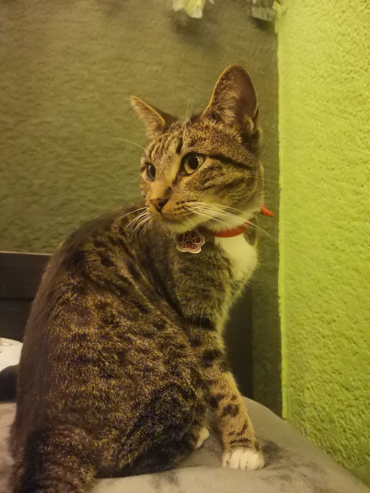
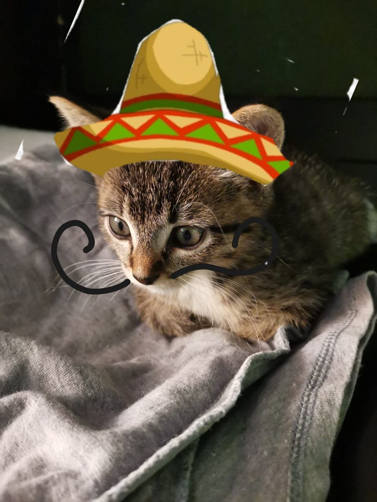

This is my cat


My cat's birthday is on July 21st, very close to mine. Adopting him was one of the best decisions I have ever made.
He makes me feel:
- Happy
- Loved
- At peace
Throughout the day, he is quite grumpy and independent, but in the middle of the night, he wakes me up because he wants food or just my attention.